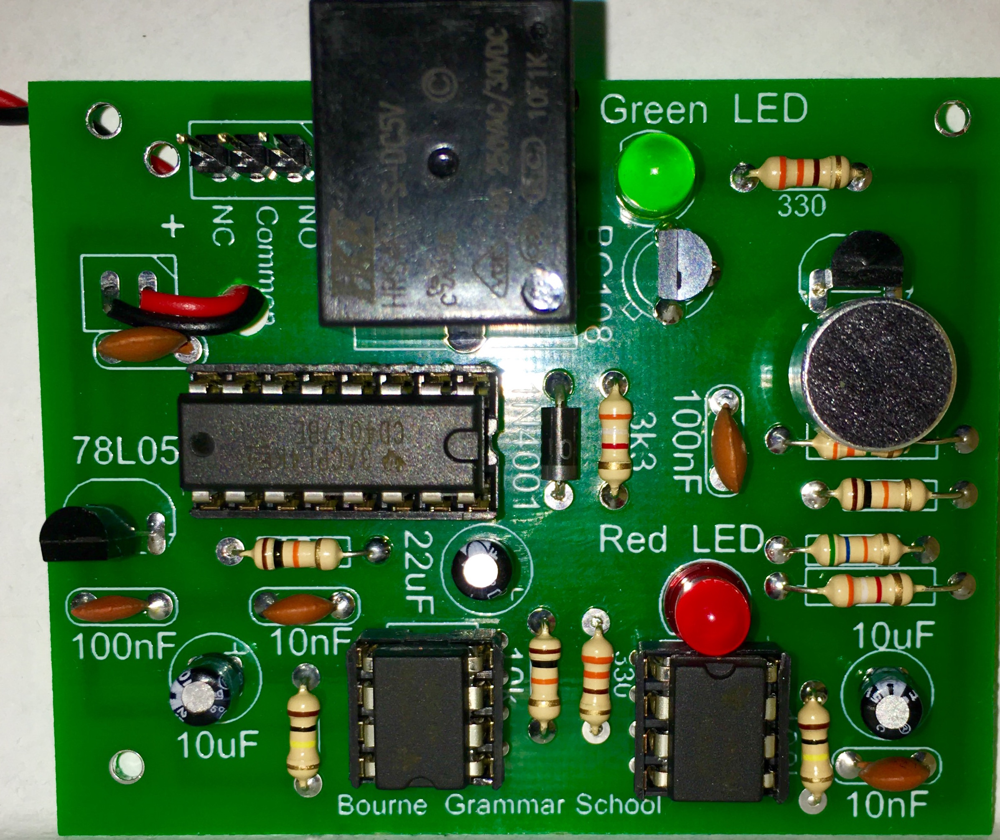

Quick Makes
Clap Switch
Learn It
- It is not always convenient to get to a normal switch to turn on a device or light. In this instant, it would be better to use something that does not require physical contact with the switch, such as sound.
- A microphone can be used to detect different levels of sound, we can then use this to trigger a circuit.
- A 555 timer circuit can be used to control the length of time we need the signal to be recieved before switching on and how quickly it can turn on and off.
- A 4017 IC (integrated circuit) is used to control the relay coil which then switches the output of the relay from it's NC (normally closed) or NO (normally open) position to the opposite position.
Try It
- Relays are components which use a very small voltage to control a much larger voltage. Click on the link to learn more about the component.
- Using a relay allows the user to keep the low voltage completely seperate from the high voltage side. This keeps the user safe from harm as they are not in direct contact with the high voltage side.
- Below are some videos of a relay working.
- Warning: 240VAC is very dangerous and should only be connected by a professional.
- Using circuit wizard, build the circuit below and test to see how the relay works.
- The circuit above uses a SPDT relay. This stands for Single Pole Double Throw. This refers to the fact there is one pole which the switch rotates on and that there are 2 throws which it can switch to, the NO throw and the NC throw.
- There are a large variety of different switch types.
Build It
- You will not be able to de-solder any of the components once soldered. Make sure you check each component is in the correct place before soldering.
- You PCB is going to look like this.
- Before making you PCB, you will need to drill 3mm strain relief holes for the wiring in 2 places.
- Always start by soldering the smallest components in place (which are usually the resistors) and then work towards the larger components.
- Two of the resistors are labelled differently on the board and have been changed. It displays 3k3 on the board, but we will use a 3k9 resistor.

- The resistor below is unlabeled, it is a 100k resistor.
- The capacitor below is unlabeled, it is a 100nF capacitor.
- The microphone needs to be connected the correct way around. There is a positive and negative side.
- You will not be able to push the microphone right down onto the board. Leave it to stick up off the board as necessary.
- In the end, your board should look like this.

- To test the board, you will need to connect the relay outputs to a breadboard and an external power supply as shown below.
- you need to clap your hands twice very quickly to get the circuit to switch between the Normally Open (NO) and Normally Closed (NC).
Badge It Silver
- Open a Word document (or text editor - NotePad) and explain how a relay works.
- Paste a screenshot of your relay circuit you designed and paste it into the word document (Or upload the picture directly).
- Now explain how the circuit works.
Badge It Gold
- Upload photos of the front and back of your project.
- Your solder joints are good, some dry joints or excess solder.
- You component placement is good, a few of the components are off the board and not aligned correctly.
Badge It Platinum
- Our solder joints are excellent, no dry joints or excess solder.
- You component placement is excellent, none of the components are off the board and not aligned correctly